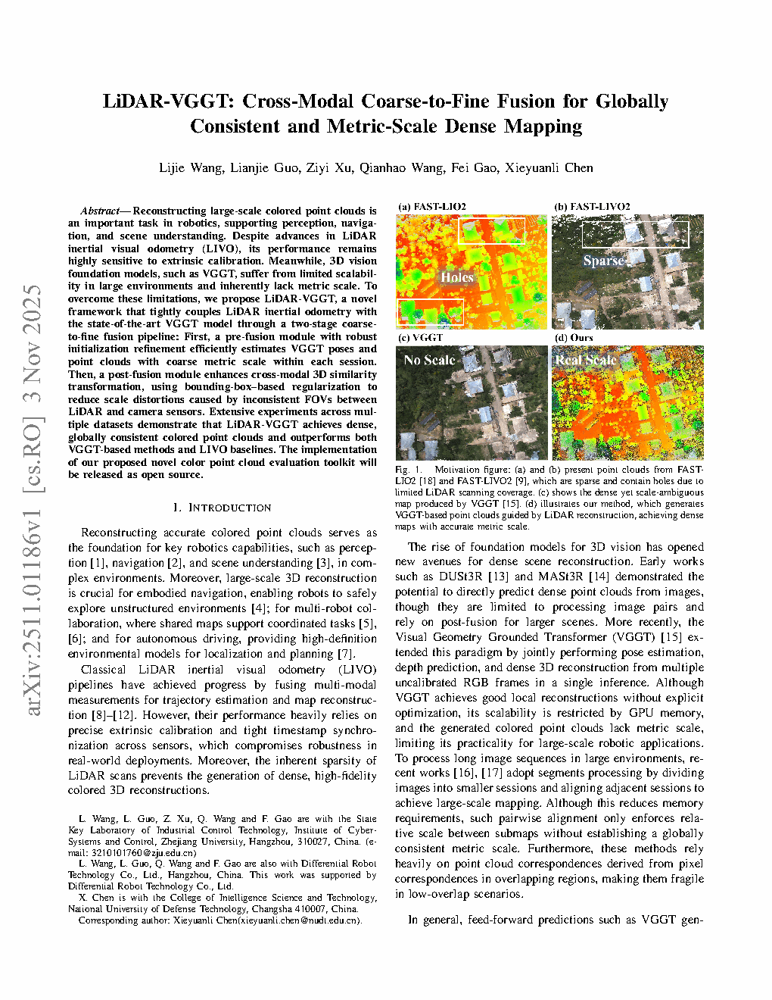
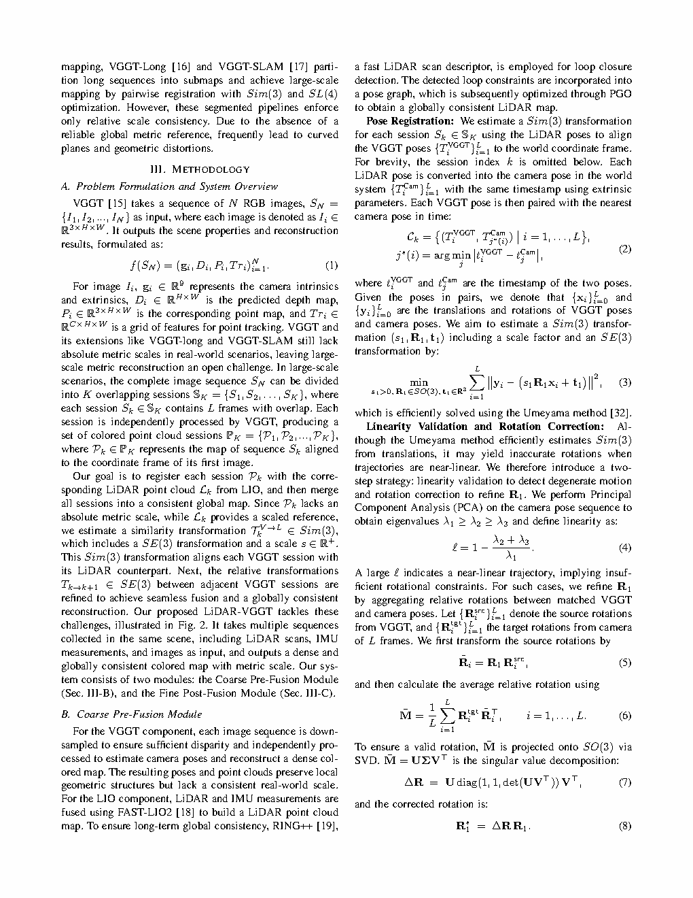
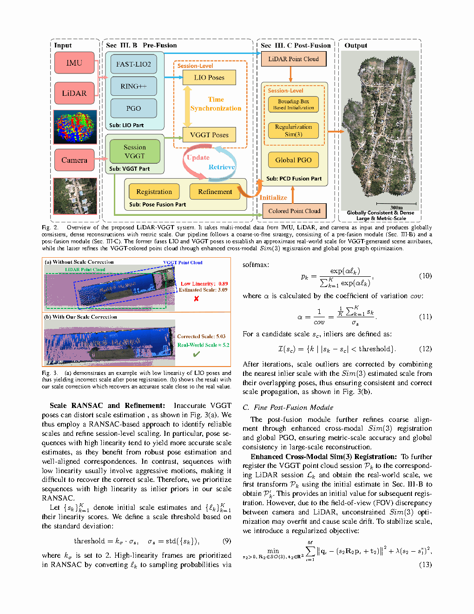

| Title | LiDAR-VGGT: Cross-Modal Coarse-to-Fine Fusion for Globally Consistent and Metric-Scale Dense Mapping（LiDAR-VGGT：面向全局一致度量尺度稠密建图的跨模态由粗到精融合） |
| Authors | Lijie Wang（王力杰）, Lianjie Guo（郭连杰）, Ziyi Xu（徐子祎）, Qianhao Wang（王乾浩）, Fei Gao（高飞，corresponding）, Xieyuanli Chen（陈谢沅澧） |
| Affiliation | Zhejiang University（浙江大学）& NUDT（国防科技大学） |
| Venue | arXiv:2511.01186，2026 |
| DOI / Links | arXiv:2511.01186 | 代码将开源 |
| TL;DR | 提出一种跨模态由粗到精融合框架，将 LiDAR 惯性里程计的度量尺度轨迹与 VGGT 视觉基础模型的稠密几何预测相融合，通过尺度 RANSAC + 线性度验证实现粗配准，通过包围盒正则化 Sim(3) 精配准实现跨模态对齐，再经位姿图优化获得全局一致的度量尺度彩色稠密点云地图。 |
| Inspiration 来源 | 启发了什么 Insight | Insight 类型 |
|---|---|---|
| VGGT (Visual Geometry Grounded Transformer) 视觉基础模型 | VGGT 能从多视图图像直接预测 3D 几何（深度图、点云、相机位姿），且泛化能力极强——但输出是 scale-ambiguous（尺度模糊）。如果能从 LiDAR 获取 metric scale（度量尺度），就能"激活"VGGT 的全部潜力 | 表示级 (Representation-level) |
| LiDAR 惯性里程计 (LIO) | LiDAR 提供精确的度量尺度轨迹和稀疏几何，但完全没有颜色/纹理信息。两者恰好互补：LiDAR 给尺度，VGGT 给稠密几何和颜色 | 模态级 (Modality-level) |
| 由粗到精 (Coarse-to-Fine) 配准范式 | 直接做跨模态 Sim(3) 配准（7自由度：旋转+平移+尺度）是高维非凸优化，极易陷入局部最优。先用尺度 RANSAC 粗估计尺度将问题降维到 SE(3)，再用包围盒正则化 Sim(3) 做局部精优化——divide and conquer 策略大幅提升鲁棒性 | 策略级 (Strategy-level) |
| 位姿图优化 (Pose Graph Optimization) | 逐帧融合会产生累积漂移——即使每帧配准完美，长序列仍会偏离。位姿图优化将 LiDAR 约束（里程计边）和 VGGT 约束（闭环边）统一建模，全局一致地优化整条轨迹 | 系统级 (System-level) |
| 线性度验证 (Linearity Validation) | VGGT 在某些退化场景（弱纹理、重复纹理）下的预测不可靠——不是所有预测都值得用。线性度验证通过检查局部点云结构是否呈线性分布（linearity），自动过滤不可靠的 VGGT 预测区域 | 方法级 (Method-level) |
flowchart TB
subgraph INPUT["输入模态"]
LIDAR["🔵 LiDAR 点云流
+ IMU 数据"]
IMG["🟢 多视图 RGB 图像"]
end
subgraph FRONTEND["前端处理"]
LIO["LiDAR 惯性里程计
FAST-LIO2"]
VGGT["VGGT 视觉基础模型
深度图 + 点云 + 位姿预测"]
end
subgraph COARSE["Coarse Pre-Fusion 粗融合"]
RANSAC["尺度 RANSAC
估计全局尺度因子 s"]
LINVAL["线性度验证
过滤不可靠 VGGT 预测"]
end
subgraph FINE["Fine Post-Fusion 精融合"]
SIM3["包围盒正则化
Sim(3) 跨模态配准"]
end
subgraph BACKEND["后端优化"]
PGO["位姿图优化
全局一致轨迹与地图"]
end
subgraph OUTPUT["输出"]
MAP["🗺️ 度量尺度彩色稠密点云地图"]
end
LIDAR --> LIO
IMG --> VGGT
LIO --> COARSE
VGGT --> COARSE
COARSE --> FINE
FINE --> PGO
PGO --> MAP
classDef lidar fill:#e8f0fe,stroke:#3b82f6,stroke-width:2px,color:#1d4ed8
classDef visual fill:#e6f7ee,stroke:#10b981,stroke-width:2px,color:#047857
classDef coarse fill:#fef7ed,stroke:#f59e0b,stroke-width:2px,color:#92400e
classDef fine fill:#f0ebfd,stroke:#8b5cf6,stroke-width:2px,color:#6d28d9
classDef backend fill:#ffeaf0,stroke:#f43f5e,stroke-width:2px,color:#be123c
classDef output fill:#cffafe,stroke:#0891b2,stroke-width:2px,color:#155e75
class LIDAR,LIO lidar
class IMG,VGGT visual
class RANSAC,LINVAL coarse
class SIM3 fine
class PGO backend
class MAP output
flowchart LR
A["LiDAR 点云流
10Hz 扫描"] --> B["FAST-LIO2
IMU 紧耦合里程计"]
B --> C["度量尺度轨迹
T_lidar ∈ SE(3)"]
C --> D["位姿图节点
(LiDAR 边约束)"]
E["多视图 RGB
图像序列"] --> F["VGGT 推理
深度图 + 点云预测"]
F --> G["尺度模糊轨迹
T_vggt ∈ Sim(3) 缺尺度"]
G --> H["位姿图节点
(VGGT 边约束)"]
C --> I["尺度 RANSAC
s = argmin Σ‖p_lidar - s·p_vggt‖²"]
G --> I
I --> J["线性度验证
λ₁/λ₃ > τ → 剔除退化"]
J --> K["粗配准结果
T_coarse ∈ Sim(3)"]
K --> L["包围盒正则化 Sim(3) 精配准"]
G --> L
C --> L
D --> M["PGO 全局优化"]
H --> M
L --> M
M --> N["彩色稠密点云地图"]
classDef sensor fill:#e8f0fe,stroke:#3b82f6,stroke-width:2px,color:#1d4ed8
classDef vggt fill:#e6f7ee,stroke:#10b981,stroke-width:2px,color:#047857
classDef fusion fill:#fef7ed,stroke:#f59e0b,stroke-width:2px,color:#92400e
classDef result fill:#f0ebfd,stroke:#8b5cf6,stroke-width:2px,color:#6d28d9
class A,B,C,D sensor
class E,F,G,H vggt
class I,J,K,L,M fusion
class N result
flowchart LR
S1["① 数据采集
LiDAR + 相机
同步记录"] --> S2["② 前端里程计
FAST-LIO2 + VGGT
各自独立运行"]
S2 --> S3["③ 粗融合
尺度 RANSAC
+ 线性度验证"]
S3 --> S4["④ 精融合
包围盒正则化
Sim(3) 配准"]
S4 --> S5["⑤ 位姿图构建
LiDAR边 + VGGT边
+ 闭环边"]
S5 --> S6["⑥ PGO 全局优化
g2o / Ceres 求解"]
S6 --> S7["⑦ 彩色点云拼接
相机位姿投影
+ 颜色融合"]
S7 -.->|迭代| S3
classDef stage1 fill:#e8f0fe,stroke:#3b82f6,stroke-width:2px,color:#1d4ed8
classDef stage2 fill:#e6f7ee,stroke:#10b981,stroke-width:2px,color:#047857
classDef stage3 fill:#fef7ed,stroke:#f59e0b,stroke-width:2px,color:#92400e
class S1 stage1
class S2,S3 stage2
class S4,S5,S6,S7 stage3
| 类别 | 具体内容 | 特性 |
|---|---|---|
| 输入 — LiDAR | LiDAR 点云帧（如 Livox Mid-360 / Ouster OS1）+ IMU 测量（加速度 + 角速度） | 度量尺度（metric scale），稀疏（~10^4 points/frame），无颜色 |
| 输入 — 视觉 | 多视图 RGB 图像序列（如全局快门相机，30Hz） | 尺度模糊（scale-ambiguous），稠密纹理，RGB 颜色信息 |
| 输入 — VGGT 预测 | VGGT 从图像预测的深度图、点云、相机位姿 | 尺度未知（up-to-scale），稠密（~10^5 points/frame），泛化性强 |
| 输出 | 全局一致的度量尺度彩色稠密点云地图 | metric scale + dense colored points + globally consistent trajectory |
跨模态稠密建图（Cross-Modal Dense Mapping）——本质是一个多传感器融合 + 跨模态配准 + 全局一致优化问题。与传统 SLAM 的区别在于：（1）不依赖特征点匹配（VGGT 直接预测几何）；（2）跨模态（LiDAR 几何 vs 视觉几何）配准而非同模态配准；（3）粗到精两阶段设计以解决跨模态 Sim(3) 配准的非凸性。
| Prior Method | Core Idea | Why It Fails for This Task |
|---|---|---|
| 传统 LiDAR SLAM (LOAM, FAST-LIO2) | 基于 LiDAR 点云的几何特征（边缘点 + 平面点）进行帧间配准和建图 | 点云稀疏，无颜色信息，无法生成视觉质量的稠密彩色地图。完全忽略视觉信息——做不出"像照片一样"的地图 |
| 视觉 SLAM (ORB-SLAM3, DSO) | 基于图像特征点匹配或直接法光度误差进行位姿估计和稀疏/半稠密建图 | 尺度模糊——纯视觉 SLAM 有 7 自由度不可观（全局位置 + 偏航角 + 尺度），需要额外信息初始化尺度。在弱纹理、光照变化大的场景中容易丢失 |
| LiDAR-相机外参标定方法 | 通过标定板或自然场景中的对应特征，估计 LiDAR 和相机之间的外参 | 处理的是传感器间的静态刚体变换——与本任务的"动态轨迹融合 + 全局尺度估计"有本质区别。且传统标定依赖特定的标定物或场景结构 |
| DUSt3R / MASt3R 等视觉基础模型 | 从多视图图像直接预测 3D 点云和相机位姿，泛化能力强 | 输出尺度模糊——预测的点云和位姿 up-to-scale。之前的用法要么忽略尺度问题（做可视化），要么需要已知尺度的 ground truth 做 scale alignment——没有自动化的度量尺度恢复方案 |
| 直接 Sim(3) ICP | 在 Sim(3) 群上直接迭代最近点配准，同时优化旋转 + 平移 + 尺度 | 7 自由度搜索空间 + 跨模态噪声差异 = 极易陷入局部最优。特别是尺度维度的梯度方向与旋转/平移维度高度耦合，优化极为困难 |
LiDAR-VGGT 的核心算法分为四个阶段：（1）独立前端——FAST-LIO2 处理 LiDAR+IMU 获得度量尺度轨迹，VGGT 处理 RGB 图像获得尺度模糊的稠密预测；（2）粗融合（Coarse Pre-fusion）——通过尺度 RANSAC 从 LiDAR-VGGT 对应点对中投票估计全局尺度因子 s，并用线性度验证过滤退化 VGGT 预测；（3）精融合（Fine Post-fusion）——以粗配准为初值，使用包围盒正则化 Sim(3) 配准实现精确的跨模态点云对齐；（4）后端优化——构建包含 LiDAR 里程计边、VGGT 视觉边和闭环边的位姿图，全局优化得到一致轨迹和地图。
| 参数 | 典型取值 | 含义 | 选择依据 |
|---|---|---|---|
| RANSAC 迭代次数 | 1000~2000 | 尺度 RANSAC 的最大随机采样次数 | 足够在 50% 外点率下找到正确模型（理论保证：$N = \log(1-p) / \log(1 - (1-\epsilon)^m)$） |
| RANSAC 内点阈值 | 0.05~0.15 m | 判断尺度一致性的距离阈值 | 取决于 LiDAR 测距精度和 VGGT 深度预测精度。太小会丢失正确匹配，太大会引入外点 |
| 线性度阈值 $\tau_{\text{linear}}$ | 50~100 | $\lambda_1/\lambda_3$ 超过此值视为退化 | 经验值——50 以上表示点云明显呈线状分布，结构信息不足以支持可靠配准 |
| 包围盒正则化权重 $\lambda_{\text{bbox}}$ | 0.1~0.5 | 精配准中包围盒损失相对于点对点损失的权重 | 太小则正则化效果弱（仍可能滑移），太大可能扭曲局部细节。0.2~0.3 是常用平衡点 |
| PGO 信息矩阵 $\Sigma_{\text{lidar}}$ | $\text{diag}(0.01, 0.01, 0.01, 0.001, 0.001, 0.001)$ | LiDAR 里程计边的置信度（平移 1cm 标准差，旋转 0.03° 标准差） | 高置信度（FAST-LIO2 精度高）→ 在小闭环中主导优化方向 |
| PGO 信息矩阵 $\Sigma_{\text{vggt}}$ | $\text{diag}(0.05, 0.05, 0.05, 0.005, 0.005, 0.005)$ | VGGT 视觉边的置信度（比 LiDAR 边低 ~5×） | 反映跨模态配准的不确定性——视觉边可信但不能完全信任 |
| 关键帧选取间距 | 0.5~1.0 m 或 10° 旋转 | 相邻关键帧的最小距离/旋转间隔 | 平衡位姿图密度和计算效率，太密则优化慢，太稀则约束不足 |
理解 LiDAR-VGGT 首先要理解 Sim(3) 群——它是 SE(3)（3D 刚体变换，6 自由度）的扩展，增加了一个全局尺度因子。形式化地：
逐帧融合会产生累积漂移——每帧的微小配准误差会在长序列中累加。位姿图优化（Pose Graph Optimization, PGO）将建图问题建模为一个因子图（factor graph）：
PGO 之所以能消除漂移，是因为闭环边提供了"长距离约束"——它们告诉优化器"第 1 帧和第 N 帧实际上很近"，迫使中间所有帧的位姿重新调整。由于 PGO 是一个大规模稀疏问题（稀疏性来自每帧只与少数几帧有约束），可以用稀疏线性求解器（如 CHOLMOD）高效求解——通常几百帧的图在毫秒级收敛。
本文还提出了一个专门的彩色点云质量评估工具包。传统点云评估只考虑几何精度（如 Chamfer Distance、点到面距离），但 LiDAR-VGGT 的输出是彩色点云——颜色质量同样重要。评估指标包括：（1）几何精度——与 ground truth 点云的 Chamfer Distance；（2）颜色一致性——同一表面在不同视角下的颜色差异（photometric consistency）；（3）完整度——覆盖 ground truth 的比例；（4）分辨率——单位面积的点的密度。这套评估工具填补了彩色点云质量评估的空白。

📷 请将截图保存为figures/fig1.png本图展示了：从左到右的完整 pipeline——LiDAR + 相机传感器输入 → FAST-LIO2（LiDAR 里程计）和 VGGT（视觉几何预测）独立运行 → 粗融合（尺度 RANSAC + 线性度验证）→ 精融合（包围盒正则化 Sim(3) 配准）→ 位姿图优化 → 彩色稠密点云地图。关键设计：粗融合输出的尺度 s 是整个系统的核心"胶水"——它桥接了 LiDAR 的度量空间和 VGGT 的视觉空间。

📷 请将截图保存为figures/fig2.png本图展示了：三列对比——（a）未处理的原始 VGGT 点云（尺度错误，与 LiDAR 点云明显错位）；（b）仅粗配准后的结果（尺度已校正，但仍有局部对齐误差）；（c）粗+精配准后的结果（尺度正确 + 精确对齐）。直观展示了由粗到精策略的效果递进——粗配准解决"对得上"的问题，精配准解决"对得准"的问题。

📷 请将截图保存为figures/fig3.png本图展示了：在大尺度场景（如校园、建筑内部）下的最终彩色稠密点云地图。注意几个关键特征：（1）颜色自然——VGGT 的稠密预测为每个点赋予了合理的 RGB 颜色；（2）几何完整——墙壁、地面、天花板都有稠密覆盖，远超 LiDAR 的稀疏扫描线；（3）全局一致——即便在长走廊等退化场景中，闭环后的地图也没有明显错位——这是位姿图优化的功劳。
| 数据问题 | 潜在困难 | 严重程度 |
|---|---|---|
| VGGT 预测失败（弱纹理 / 重复纹理区域） | VGGT 在这些区域的深度图和点云预测完全错误，送入 RANSAC 会大幅降低内点比例，可能导致粗配准失败或尺度估计完全错误 | ⭐⭐⭐⭐⭐ (致命) |
| 光照剧烈变化 | VGGT 在过曝/欠曝区域的预测偏移——视觉基础模型对分布外（out-of-distribution）光照敏感。光照突变也会影响多视图匹配的一致性 | ⭐⭐⭐⭐ (严重) |
| LiDAR-相机时间戳不同步 | Fast-moving 场景中，不同步导致 LiDAR 和 VGGT 点云存在空间错位——在对应点建立阶段引入系统性偏差，尺度 RANSAC 估计会系统性地偏大或偏小 | ⭐⭐⭐⭐ (严重) |
| LiDAR 点云稀疏（远距离 / 低反射率表面） | 粗配准依赖 LiDAR-VGGT 对应点——如果 LiDAR 点太稀疏，能建立的有效对应点对太少，RANSAC 可能无法收敛或方差极大 | ⭐⭐⭐ (中等) |
| 运动模糊（快速旋转/平移） | VGGT 在模糊图像上的深度预测会退化——模糊区域的几何重建出现拉伸/压缩伪影，导致点云形状畸变，直接影响精配准质量 | ⭐⭐⭐ (中等) |
| 参考文献 | 为什么重要 |
|---|---|
| Wang et al. (2024) — VGGT: Visual Geometry Grounded Transformer | VGGT 原始论文。理解 VGGT 的网络架构（Transformer-based）、训练数据（mixed real+synthetic）、输出格式（深度图+点云+相机位姿）、以及固有的 scale ambiguity 来源——这是整个 LiDAR-VGGT pipeline 的基础。 |
| Xu et al. (2022) — FAST-LIO2: Fast Direct LiDAR-Inertial Odometry | 本文使用的 LiDAR 惯性里程计。理解 ikd-Tree 数据结构、IMU 预积分、ESIKF (iterated extended Kalman filter) 状态估计——这是度量尺度轨迹的来源。 |
| Wang et al. (2023) — DUSt3R: Geometric 3D Vision Made Easy | VGGT 的 predecessor——首个从任意图像对预测 3D 点云的视觉基础模型。理解其 cross-attention 机制、训练损失设计，以及为何预测是 scale-ambiguous 的。 |
| Dellaert & Kaess (2017) — Factor Graphs for Robot Perception | 位姿图优化的理论基础。理解因子图模型、稀疏非线性最小二乘、信息矩阵的物理含义、以及增量平滑（incremental smoothing）——对于理解 PGO 和扩展到在线 SLAM 至关重要。 |
| Kummerle et al. (2011) — g2o: A General Framework for Graph Optimization | 本文使用的位姿图优化库。理解 g2o 的边-顶点抽象、信息矩阵设置、求解器选择（LM/Dogleg/Powell's Dogleg）——对于实现和调试位姿图优化有直接帮助。 |